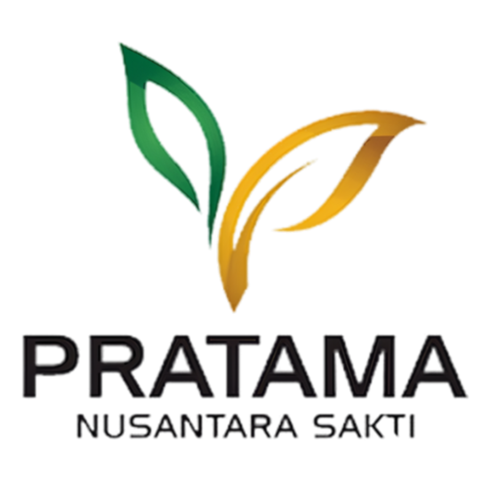
Rancang Bangun Website HR Safety Campus
Sistem Digital Administrasi Tenaga Kerja Kontrak Berbasis Laravel — migrasi dari Microsoft Access ke aplikasi web dengan RBAC, audit trail, dan validasi berlapis.
Dari Microsoft Access ke Aplikasi Web
Pencatatan tenaga kerja kontrak sebelumnya bergantung pada berkas Microsoft Access tunggal — menyulitkan kolaborasi, rawan duplikasi, dan tanpa jejak audit. Sistem baru memindahkan seluruh proses ke web.
Maksud, Tujuan & Prosedur Kerja Magang
Kerangka akademis, target operasional, serta lini waktu pelaksanaan kerja magang sebagai Full-Stack Developer.
Magang sebagai Full-Stack Developer untuk mengalami langsung siklus SDLC skala enterprise — menangani migrasi data besar, merancang keamanan akses berbasis peran, serta beradaptasi dengan ritme kerja profesional dan komunikasi langsung dengan klien.
Full-Stack Developer, bekerja penuh dari kantor Senin–Jumat 08.00–17.00 WIB; seluruh rapat & koordinasi dilakukan tatap muka.
Membangun & mengintegrasikan HR Safety Campus — sistem administrasi tenaga kerja kontrak berbasis Laravel — untuk menggantikan Microsoft Access, sekaligus menutup celah kecurangan lewat validasi berlapis, RBAC, dan audit trail.
Uraian Pelaksanaan Kerja Magang
Enam fitur inti HR Safety Campus beserta logika utamanya. Gunakan tombol Sebelumnya / Berikutnya untuk menelusuri tiap fitur tanpa berpindah halaman.
Pondasi sistem. Staf HR mendaftarkan pekerja kontrak: data pribadi, kepegawaian, dan foto. ID dibuat otomatis (format YYYYXXXX), status ditentukan otomatis, dilengkapi pencarian wilayah IndoRegion, fitur Re-Hire, dan cetak ID Card PDF (FPDF).
PHP · Laravel // ID = tahun + 4 digit, dari max(no_id) — bukan count() $last = Employee::where('no_id','like',$year.'%') ->orderBy('no_id','desc')->first(); $seq = $last ? ((int) substr($last->no_id,4)) + 1 : 1; $data['no_id'] = $year.str_pad($seq,4,'0',STR_PAD_LEFT); // Status otomatis: Aktif jika lengkap, Pending jika belum $emp->status = $emp->isComplete() ? 'Aktif' : 'Pending';
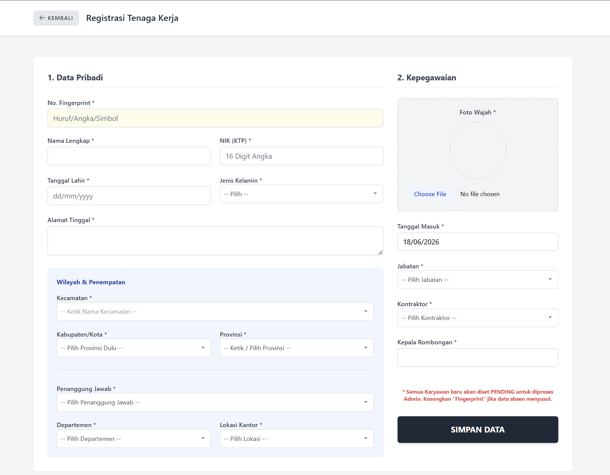
Mengelola penggantian biaya transportasi: CLAIM_IN (≥60 hari, maks 1×/tahun) dan CLAIM_OUT (≥90 hari, wajib sudah CLAIM_IN, bukan Plantation). Nominal dihitung otomatis dari kombinasi departemen + provinsi asal.
PHP · Validasi Berlapis // CLAIM_IN: min 60 hari kerja, maks 1x / tahun if ($days < 60) { $eligibleIn = false; $msg = "Baru {$days} hari (min. 60)"; } // CLAIM_OUT: min 90 hari, wajib sudah CLAIM_IN, // dan bukan departemen Plantation if (stripos($emp->department,'Plantation') !== false) { continue; // kunci karyawan Plantation }
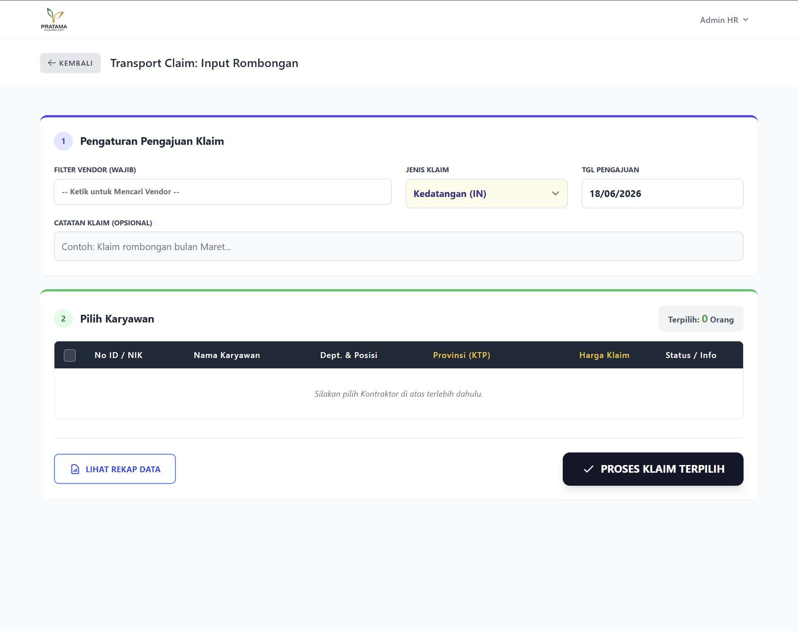
Menerbitkan surat jalan dengan nomor referensi unik otomatis (mis. 0001/MMJ/PERMIT/VI/2025) dan cetak A4 landscape. Jika jenisnya "Keluar Selamanya", status pekerja otomatis menjadi Non-Aktif.
PHP · Penomoran Surat // Format: urutan/inisial/PERMIT/bulan-romawi/tahun $ref = sprintf('%04d/%s/PERMIT/%s/%s', $newNumber, $initial, $romawi, $year); // "Keluar Selamanya" → status jadi Non-Aktif if ($request->type == 'Keluar Selamanya') { $employee->update(['status' => 'Non-Aktif']); }
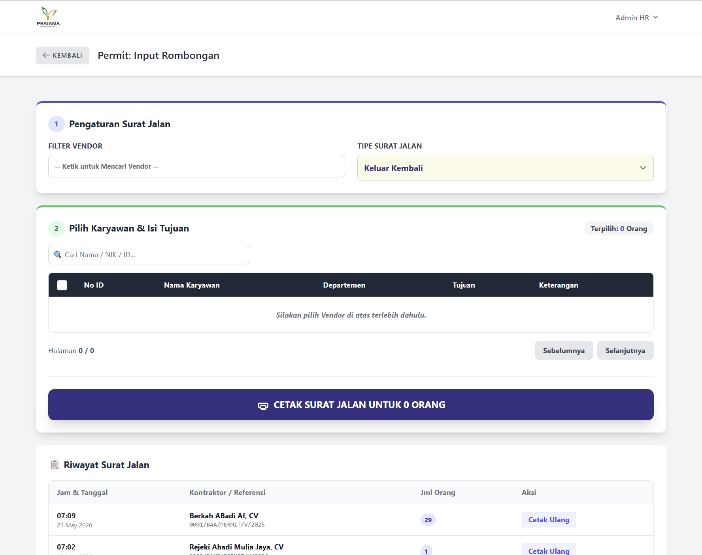
Master tarif per departemen (Harvesting/Plantation) + provinsi. Setiap pembaruan diarsipkan otomatis dalam satu DB::transaction (audit-friendly), dengan unggah PDF surat pengesahan resmi.
PHP · DB::transaction // Pembaruan tarif dibungkus transaksi (atomik) DB::transaction(function () use ($activePeriod) { // 1. Arsipkan periode tarif lama untuk audit $archive = RatePeriod::create([ ... ]); // 2. Salin seluruh tarif lama ke arsip foreach ($activePeriod->rates as $old) { ... } // 3. Perbarui tarif aktif dengan input baru });
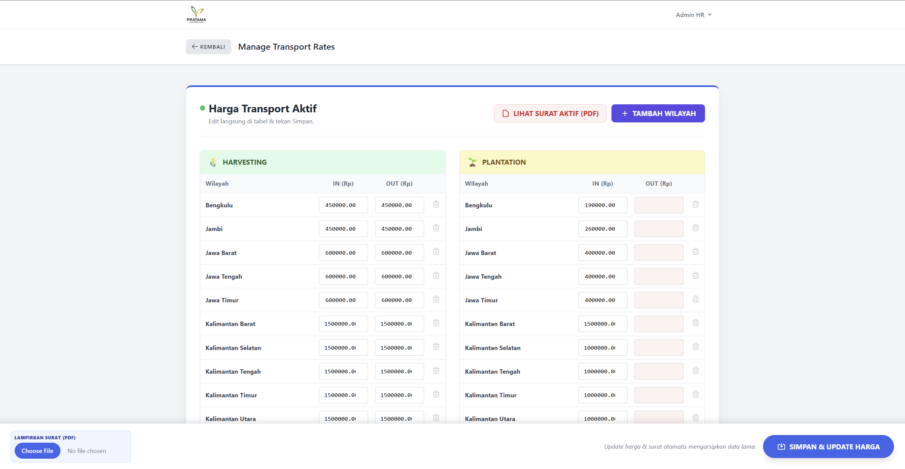
Lapisan kontrol kualitas: pekerja Pending dievaluasi otomatis lewat isComplete() (17 field wajib). Hanya data lengkap yang bisa di-approve massal; setiap perubahan tercatat di histori untuk audit trail.
PHP · isComplete() // 17 field wajib dicek sebelum bisa di-approve public function isComplete() { foreach ($this->required as $field) { if (empty($this->$field)) return false; } return true; } // Approval massal memvalidasi ulang kelengkapan if ($emp->isComplete()) { $emp->status = 'Aktif'; }
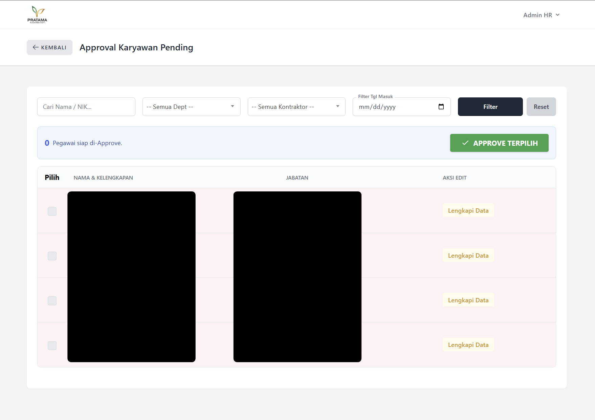
Dua tingkat akses: Administrator (lolos semua via Gate::before) dan User biasa dengan izin granular per menu (least privilege), dirender di Blade lewat @can().
PHP · Gate RBAC // Admin: lolos semua gerbang lebih dulu Gate::before(fn($user) => ($user->email === 'adminhrsc@gmail.com' || $user->is_admin) ? true : null); // User biasa: izin per menu (least privilege) Gate::define('access-claim', fn($user) => ($user->permissions['claim'] ?? '') === 'full');
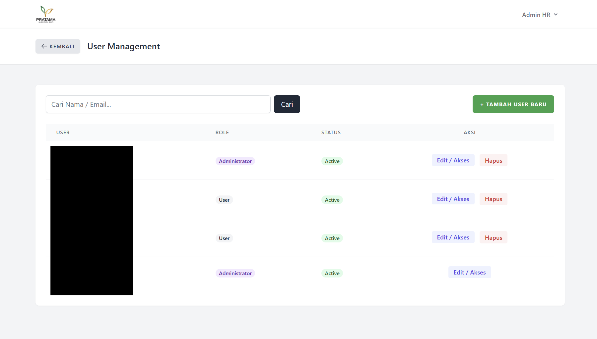
Tampilan Aplikasi
Demonstrasi berjalan dan cuplikan antarmuka sistem HR Safety Campus. Klik gambar mana pun untuk memperbesar saat sesi tanya jawab.
Rekaman alur penggunaan sistem secara langsung, dari registrasi tenaga kerja hingga penerbitan dokumen.
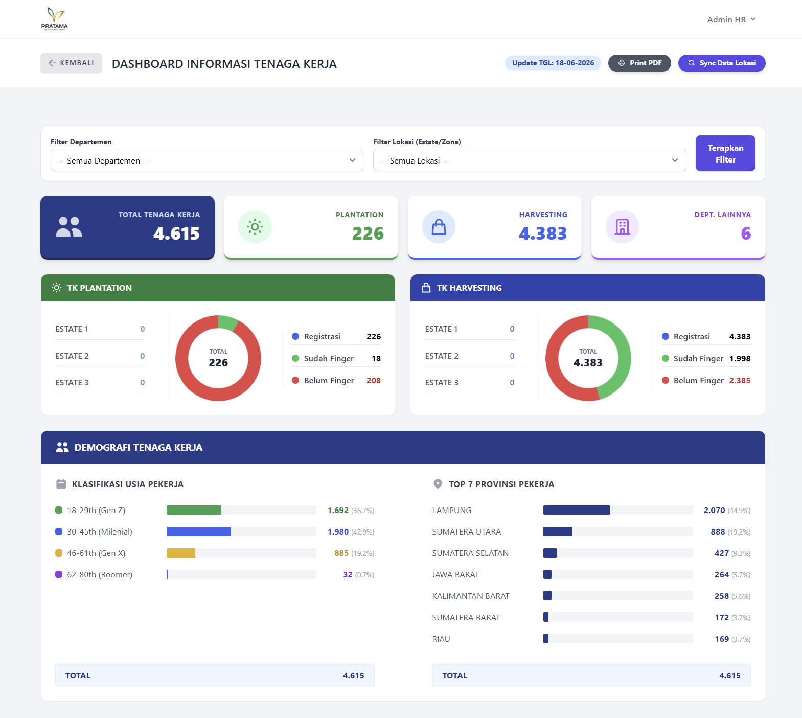
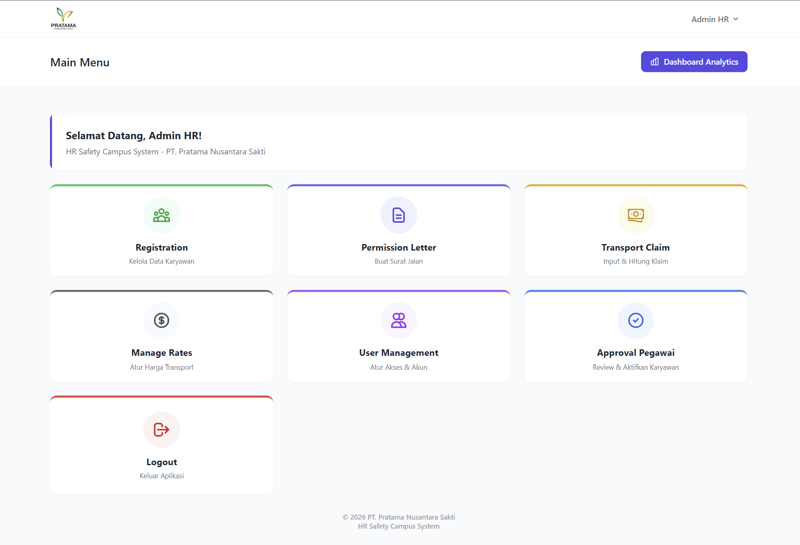
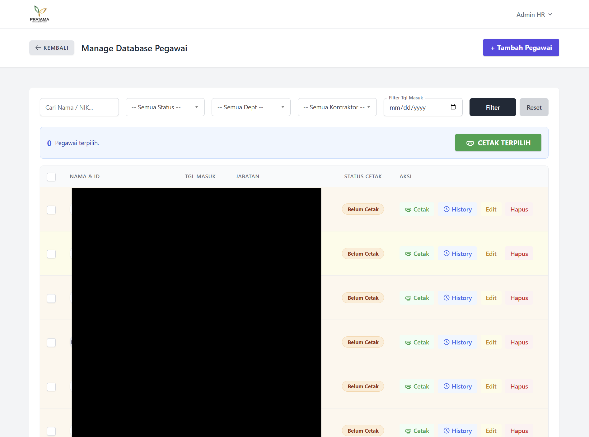
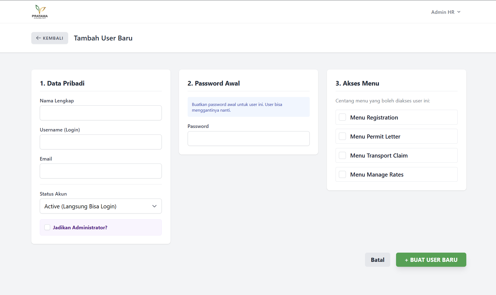
Model Hak Akses & Alur Kerja
Dua tingkat akses yang fleksibel, plus tiga alur operasional inti sistem.
Ditentukan lewat Gate::before: jika email = adminhrsc@gmail.com atau kolom is_admin bernilai true, semua gerbang otomatis lolos.
Akses disimpan di kolom permissions (array) dan dicek via Gate: access-registration, access-permit, access-claim, access-rates. Menu hanya dirender bila @can() lolos.
Sorotan Teknis & Keputusan Desain
Detail rekayasa yang membedakan sistem ini — dari anti-kecurangan hingga migrasi data.
Aturan 60 / 90 / 365 hari + pengecualian departemen Plantation. Logika diletakkan di sisi server untuk menutup celah kecurangan vendor.
Tiap update membungkus DB::transaction — membuat RatePeriod arsip baru dan menyalin seluruh tarif lama. Rancangan audit-friendly & atomik.
Migrasi ~4.000 data: validasi NIK 16 digit, deteksi ganda di berkas & database, memisahkan data valid dari yang bermasalah sebelum insert.
Memakai Gate + kolom permissions — fleksibel tanpa tabel role-permission yang rumit, tetap mudah diatur per menu.
Sengaja memakai max(no_id) alih-alih count() agar penomoran tetap konsisten meski ada data terhapus — keputusan desain yang sadar.
Menarik data Vendor & PIC dari API internal, dengan lazy sync lokasi PIC pada dashboard yang di-cache harian.
Kendala & Solusi yang Ditemukan
Rintangan nyata selama pengembangan beserta strategi penyelesaiannya.
Migrasi ~4.000 data dari Microsoft Access memuat banyak NIK ganda dan format yang tidak seragam, berisiko mengotori basis data baru.
Tanpa aturan tegas, vendor berpotensi mengajukan klaim ganda atau tidak sesuai masa kerja pekerja.
Penomoran berbasis hitungan baris menjadi tidak konsisten ketika ada data yang dihapus.
Skrip memvalidasi NIK 16 digit, mendeteksi ganda di dalam berkas & database, lalu memisahkan data valid dari yang bermasalah sebelum insert.
Aturan masa kerja dan frekuensi diterapkan di sisi server (+ pengecualian Plantation); pekerja tidak layak dikunci langsung di antarmuka.
Penomoran memakai max(no_id) bukan count(), dipadukan soft delete & Re-Hire agar ID tetap konsisten.
Simpulan & Saran Pengembangan
Sistem manajemen tenaga kerja kontrak berbasis web berhasil menggantikan proses berbasis Microsoft Access. Sistem menyediakan otomatisasi penomoran ID, penentuan status, persetujuan, klaim transport, surat izin, dan manajemen tarif — dilengkapi audit trail, RBAC, serta keberhasilan migrasi ~4.000 data lama yang telah dibersihkan.